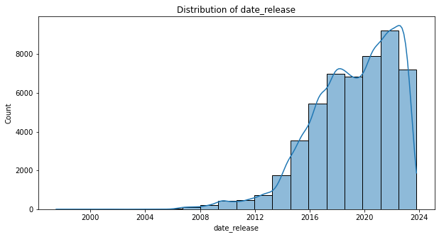
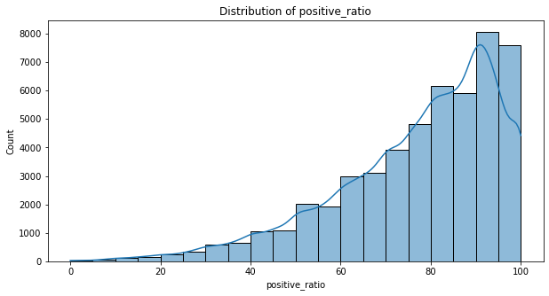
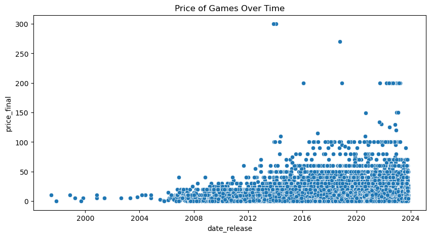
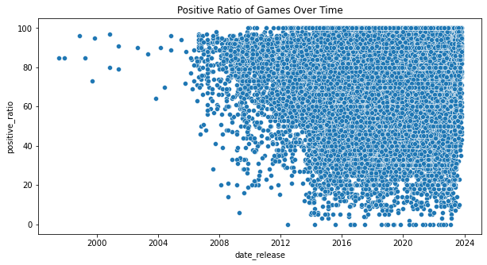
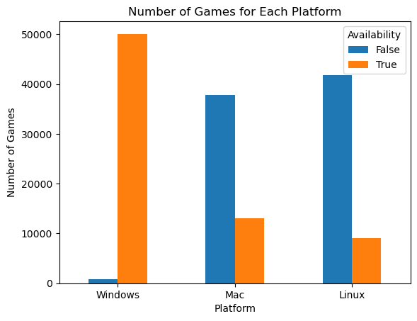
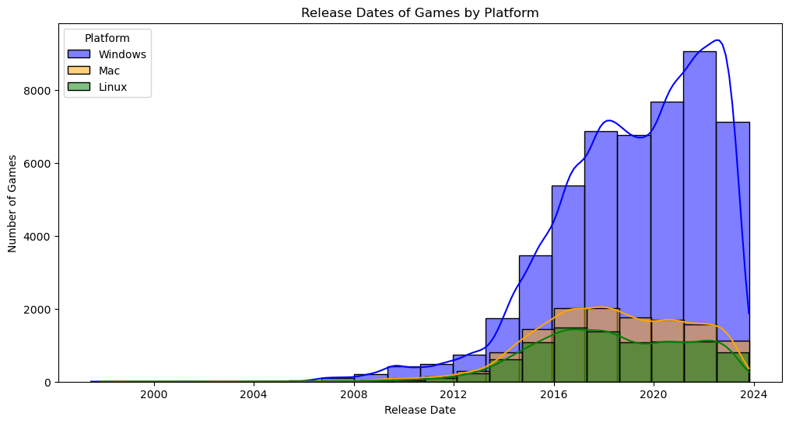

Throughout the years more games have been releasing at an expoential rate, then drops in the year 2022-2024.

There are more positive ratios (ratings) of games as the ratings increases.

The average price of games slightly increased as time went on, a few even reaching $300 and the majority are between $0 - $60.

There is a huge number of games that have been released since 2010. There is a cluster of positive ratios towards the higher side of ratings.

Windows supports the most number of games on Steam, while Mac and Linux machines don't support nearly as many.

The average ratings for Window users shows an increase, whereas Mac and Linux users increased slightly and remained somewhat stagnant.